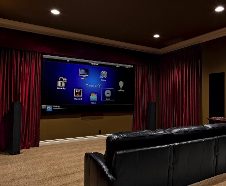
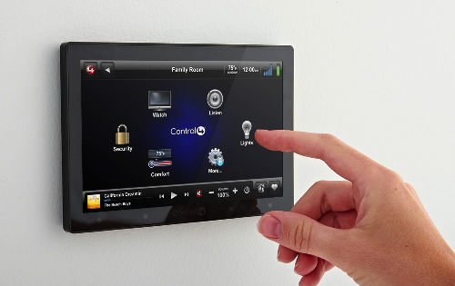

Welcome to Avid Home Theater
Founded in 2005, Avid Home Theater specializes in home theater, smart home automation, and high fidelity audio solutions for residential and commercial customers. The life force of Avid Home Theater lives within our Hi-Fi roots and eagerness to enhance life experience and connect deeply with our clients through a harmonic conduit. With 25 years of combined industry knowledge, we offer you exquisite solutions that satisfy everyone, from the most discerning listener to a casual indulgence. Partnering with the best manufacturers in the industry, including Sonos and Control4, our knowledgeable staff can help everyone find a solution that matches the budget, exceeding their expectations!
Areas of Expertise

SURROUND SOUND Discrete to the eye, but not the ear - we design and integrate surround sound systems into your living space. Whether it's fantastic sounding architectural speakers or ultra-thin flat panel displays controllable from an iPad, we offer solutions aligned perfectly with your budget and requirements.
DISTRIBUTED AUDIO Listen to anything anywhere in your home with quality sound and convenience. We offer whole-house music solutions that aggregates your iTunes music library with a virtually endless selection of Internet streaming and radio services. Our modular systems are completely scalable for both value conscious and performance minded customer.

SMART HOME AUTOMATIONS Avid makes controlling an automated space with a smart phone or tablet easy as ever. We offer energy efficient solutions to control lighting, thermostats, security and surveillance, motorized shades, digital music, and more. We are a Premier Control4 Dealer because we implement reliable, cutting edge solutions from a true industry leader while maintaining our high-value approach.